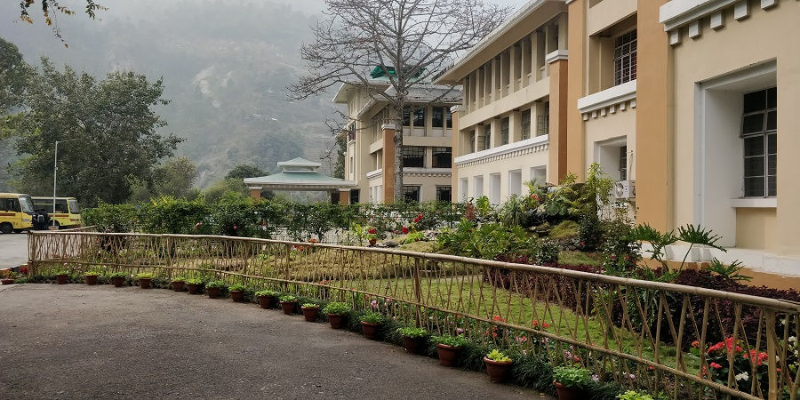

ICCITM


International Conference on Contemporary Issues in Techno- Management-2020 (ICCITM-2020) is being organized jointly by the Department of Management Studies and Department of Mechanical Engineering at SMIT Campus, Majhitar, East Sikkim, India during 26 th and 27 th of November, 2020 (Tentative dates). The aim of the (ICCITM–2020) is to accumulate and exchange innovative ideas, latest knowledge and unique experiences for the benefits of researchers, industrialists, academicians and other participants. In the era of globalization and privatization, various issues in the field of Business Management arise resulting in integration of systems, functionalities and business operations. The proposed event shall make an honest endeavor in the aforesaid direction in order to foster an outcome oriented approach in the defined fields. It will have an interface amongst the professionals from industry and educationists from academia to address key issues in modern management and technology and the challenges faced by the business world in handling the same.
The conference aims to capture the innovative ideas and knowledge, both theoretical and empirical that will assist in guiding organizations to manage business under different environmental conditions. The primary objective of the conference is to provide with a forum to discuss diverse issues and challenges associated with various functional areas of business and technology and to put forward feasible solutions to resolve the same. ICCITM-2020 welcomes Abstracts followed by Full Papers/Case Studies/Review Papers and related observations to the conference theme, including but not restricted to the under mentioned areas.
+917872626756
Dr. G. Sureshkrishna+916380536521
Dr. Anindita Adhikary+919474492092
Dr. Manish Kumar Roy+919735265227